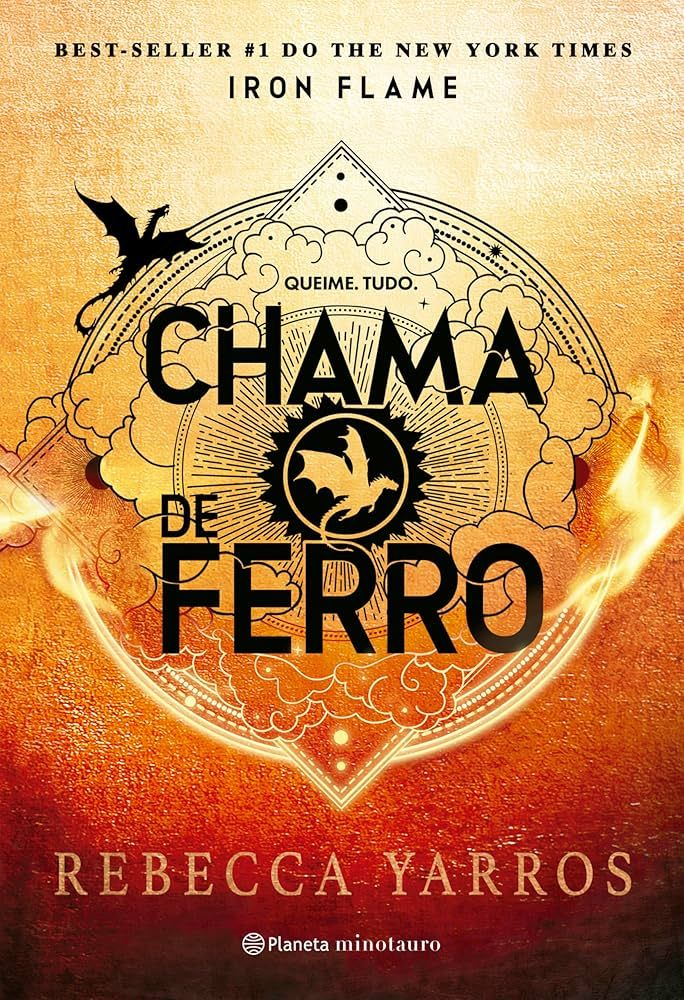

Chama de Ferro
Rebecca Yarros
Gênero:Fantasia| Ano:2024| Páginas:784 | Editora:Planeta Minotauro
Sipnose:
Todos esperavam que Violet Sorrengail morresse durante seu primeiro ano no Instituto Militar Basgiath... inclusive ela própria. Mas a Ceifa foi apenas o primeiro teste, cujo objetivo maior era eliminar os mais fracos, os considerados indignos e os mais azarados. No entanto, agora começa o verdadeiro treinamento, e Violet já se pergunta como – e se – vai conseguir sobreviver. Não apenas porque o processo é extremamente exaustivo e repleto de armadilhas, ou porque cada etapa é projetada para levar os novos cavaleiros aos limites da dor e do sofrimento, mas por causa do novo vice-comandante, que parece ter como missão pessoal convencer Violet de que ela jamais será capaz de controlar suas habilidades extraordinárias... a menos que traia o homem que ama.
"Ah, e violência, lembre-se de que só o corpo é frágil. Você é indestrutível."
Sobre o autor:
Rebecca Yarros é autora best-seller #1 do The New York Times, do USA Today e do Wall Street Journal. Seus mais de vinte romances receberam críticas estreladas de veículos especializados como a Publishers Weekly, além da indicação de Melhor Livro do Ano pela Kirkus. Rebecca tem grande admiração por todos os heróis militares e conta com a sorte de estar casada com um deles há mais de vinte anos. Mãe de seis, procura sobreviver aos anos da adolescência de dois dos quatro filhos que jogam hóquei. Quando não está escrevendo, é possível encontrá-la no rinque de hóquei ou tocando guitarra enquanto toma café.